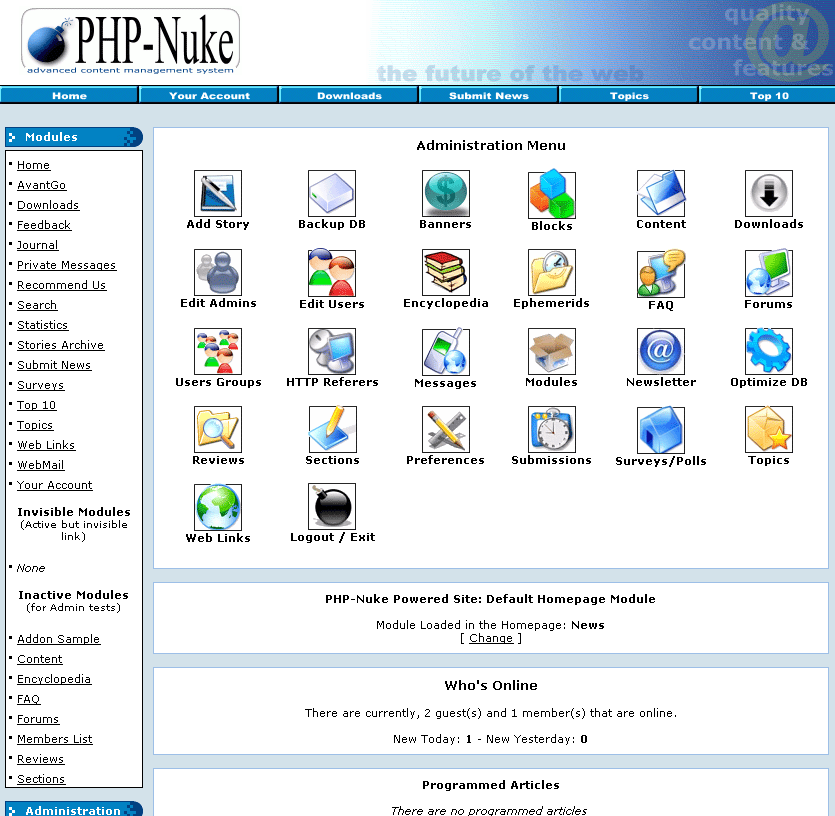
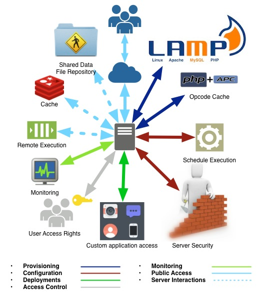
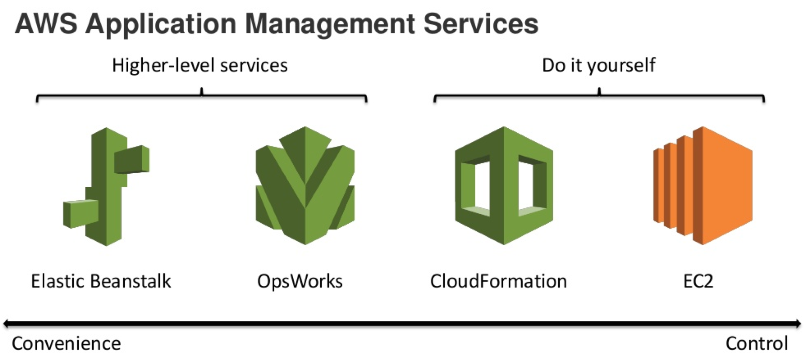
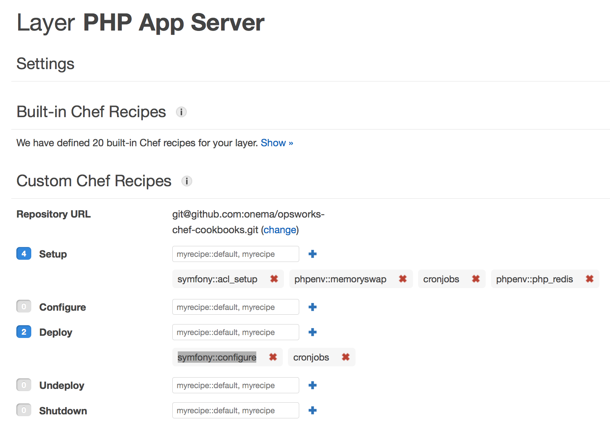
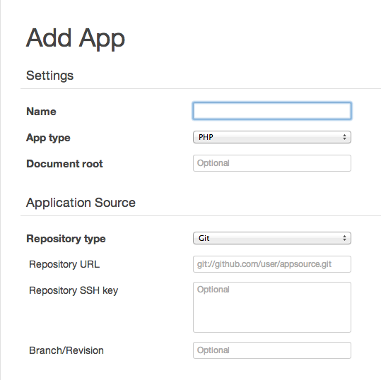

Created by Juan Manuel Torres / @onema / onema.io

How do you provision instances?
AWS OpsWorks
Announced on February 18, 2013
OpsWorks features an integrated experience for managing the complete application lifecycle, including:
- Resource provisioning
- Configuration management
- Application deployment
- Software updates
- Monitoring
- Access control
It allows you to configure and manage your applications without resorting to custom tools
|
 |
|
Is not that bad, Chef can be awesome!
execute 'install_php_redis' do
command "pecl install redis"
action :run
end
template 'redis.ini' do
case node[:platform]
when 'centos','redhat','fedora','amazon'
path "/etc/php.d/redis.ini"
when 'debian','ubuntu'
path "/etc/php5/conf.d/redis.ini"
end
source 'redis.ini.erb'
owner 'root'
group 'root'
mode 0644
notifies :restart, resources(:service => 'apache2')
end
; redis.ini.erb
; configuration for php REDIS module
extension=redis.so
# Recipe. The cron resource is used to manage cron entries.
# Requires access to cron tab
node[:cron_jobs].each do |cron_values|
cron "#{cron_values[:name]}" do
minute "#{cron_values[:minute]}"
hour "#{cron_values[:hour]}"
day "#{cron_values[:day]}"
month "#{cron_values[:month]}"
weekday "#{cron_values[:weekday]}"
command "#{cron_values[:command]}"
end
end
# Metadata
{
"cron_jobs": [
{
# Send an email every sunday at 8:10
"name": "send_email_sunday_8",
"minute": "10", "hour": "8", "day": "*", "month": "*", "weekday": "0",
"command": "cd /srv/www/app_name/current && php .lib/mailing.php"
},. . .]
}
- Setup occurs on a new instance after it successfully boots
- Configure occurs on all of the stack's instances when an instance enters or leaves the online state
- Deploy occurs when you run a deploy command
- Undeploy occurs when you delete an app or run an undeploy command
- Shutdown occurs after you direct AWS OpsWorks to shut an instance down
Remember the Chef Cookbook we added...
Some are optional, some are required by the application
Get it from GitHub!
Allow Mr "One Doe" to see the stack and ssh to the instance
Let's do it all over again
This time we'll use the AWS SDK for PHP
{
"require": {
"aws/aws-sdk-php": "2.4.*@dev"
}
}
$ php composer.phar update aws/aws-sdk-php
use Aws\OpsWorks\OpsWorksClient;
class OpsWorksCommand extends Command
{
protected $client;
protected $this->parameters;
public function __construct()
{
parent::__construct();
$this->parameters = $config['parameters'];
$this->client = OpsWorksClient::factory(array(
'key' => $this->parameters['aws_api_key'],
'secret' => $this->parameters['aws_api_secret'],
'region' => $this->parameters['aws_region'],
));
}
}
$ php app/console opsworks:create:stack STACK_NAME
$result = $this->client->createStack(array(
'Name' => $stackName,
'Region' => $this->parameters['aws_region'],
'ServiceRoleArn' => $this->parameters['aws_iam_role'],
'DefaultInstanceProfileArn' => $this->parameters['aws_instance_role'],
));
echo $result['StackId'];
$ php app/console opsworks:update:stack:chef STACK_ID git CHEF_REPO PATH_KEY
$this->client->updateStack(array(
// StackId is required
'StackId' => $stackId,
'ServiceRoleArn' => $this->parameters['aws_iam_role'],
'UseCustomCookbooks' => true,
'CustomCookbooksSource' => array(
'Type' => $type,
'Url' => $url,
'SshKey' => $sshKey,
),
));
$ php app/console opsworks:create:layer STACK_ID
$result = $this->client->createLayer(array(
'StackId' => $stackId,
'Type' => 'php-app',
'Name' => 'PHP App Server',
'Shortname' => 'php-app-server',
));
echo result['LayerId'];
$ opsworks:update:layer LAYER_ID --recipes-setup="..." --os-packages="..."
$this->client->updateLayer(array(
'LayerId' => $layerId,
'CustomRecipes' => $customRecipes, // array(string, ...)
'Packages' => $osPackages, // array(string, ...)
));
$ opsworks:create:app STACK_ID NAME --source-type="" --source-url="" --source-revision="" --ssh-key-path=""
$this->client->createApp(array(
// StackId is required
'StackId' => $stackId,
'Type' => 'php',
'Name' => $name,
'ShortName' => $name
'AppSource' => array(
'Type' => $type,
'Url' => $url,
'Revision' => $revision,
'SshKey' => $sshKey,
),
));
$ php app/console opsworks:create:instance STACK_ID LAYER_ID c1.medium
$result = $this->client->createInstance(array(
'StackId' => $stackId,
'LayerIds' => array($layerId),
'InstanceType' => $instanceType,
'DefaultInstanceProfileArn' => $this->parameters['aws_instance_role'],
));
echo $result['InstanceId'];
$instanceResult = $this->client->startInstance(array(
'InstanceId' => $result['InstanceId']
));
echo 'Success!';
This time we'll setup the whole application with a single command